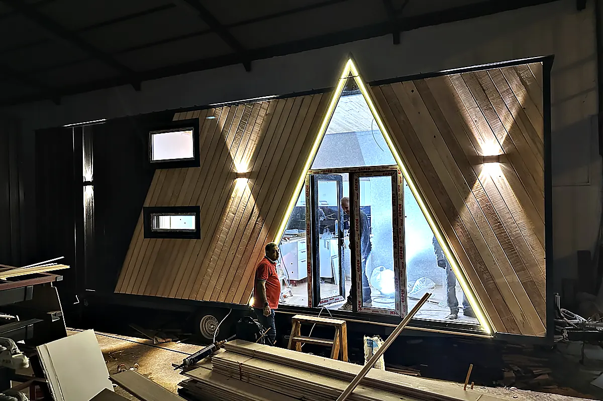

Tiny House im Harz
Der Harz ist das nördlichste Mittelgebirge mit alpinen Verhältnissen: Auf dem Brocken liegt Schnee, wenn im Vorland längst Frühling ist, und die Täler sind eng. Dazu kommt, dass der Harz in drei Bundesländern liegt — Niedersachsen, Sachsen-Anhalt, Thüringen — und ein Projekt je nach Seite des Berges unter einer anderen Bauordnung steht.
Im Harz werden Schneelast und Winterbetrieb je Höhenlage nachgewiesen und geplant, und die Zufahrt in den engen Tälern vor dem Modell geprüft. Welche Bauordnung gilt, hängt davon ab, in welchem der drei Bundesländer die Fläche liegt — die drei Länderseiten nennen jeweils die amtliche Quelle.
Höhenlage: vom Vorland bis zum Brocken
Zwischen dem Harzvorland und den Hochlagen um Braunlage, Schierke und Torfhaus liegen Höhenunterschiede, die über Schneelast, Winterdauer und Heizbedarf entscheiden. Der Nachweis der Schneelast gehört je Standort zu den Projektunterlagen; die Technik für den Winterbetrieb wird für die Höhenlage gewählt, nicht für den Harz im Allgemeinen.
Enge Täler, kurze Zufahrten
Die Harztäler sind eng, die Straßen kurvig, die Zufahrten zu Ferienparks und Hotels oft über Brücken und durch Ortsdurchfahrten mit Begrenzungen. Ob ein neun Meter langes Haus bis zum Stellplatz kommt, wird vor der Modellwahl geprüft — ein Beitrag der Praxisreihe beschreibt Kran und Rangieren.
Drei Bundesländer
Eine Fläche in Bad Harzburg steht unter der niedersächsischen Bauordnung, eine in Schierke unter der von Sachsen-Anhalt, eine in Bad Sachsa wieder unter der niedersächsischen und eine am Südharz unter der thüringischen. Die Ortsseiten der Region führen jeweils zur Seite ihres Bundeslandes mit der amtlichen Quelle. Wer hier Ferienparks, Hotels oder Campingplätze betreibt, findet auf den Betreiberseiten, was vor der Anfrage zu klären ist.
Was planungsrechtlich gilt, steht mit amtlicher Quelle auf der Seite des Bundeslandes:
Wer hier typischerweise plant
Ferienpark & Resort
Gleiche Einheiten in Serie, auf Betreiberregeln und Nebenkosten gerechnet.
Zimmer außerhalb des HausesHotel & Naturhotel
Zusätzliche Zimmer im Außenbereich, die zum Haus passen und zur Saison geliefert werden.
Mietobjekte auf dem PlatzCampingplatz & Glamping
Mietobjekte, die in die Platzordnung passen und außerhalb der Saison geliefert werden.
64 Orte in der Region Harz
Geografisch abgeleitete Zuordnung über Koordinaten und Bundesland — eine Orientierung, keine amtliche Gebietsabgrenzung.